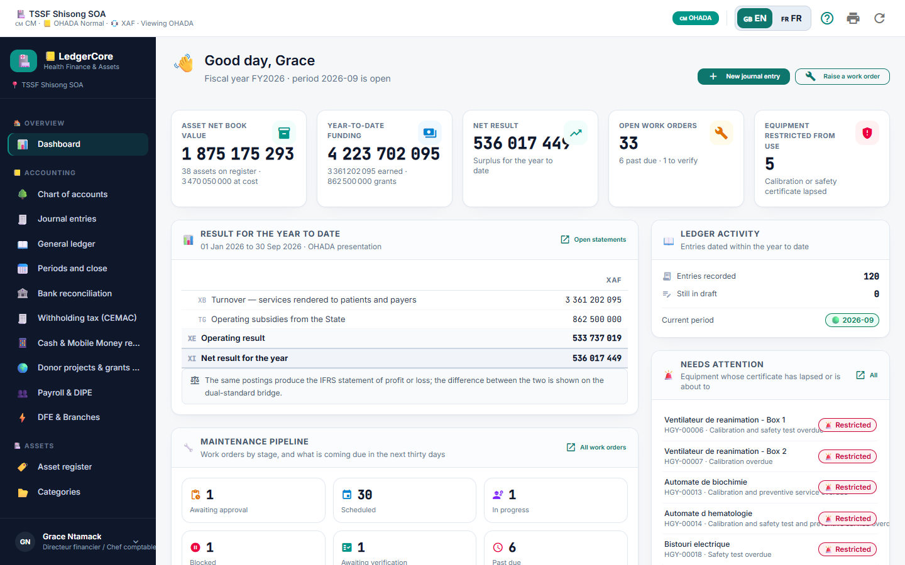
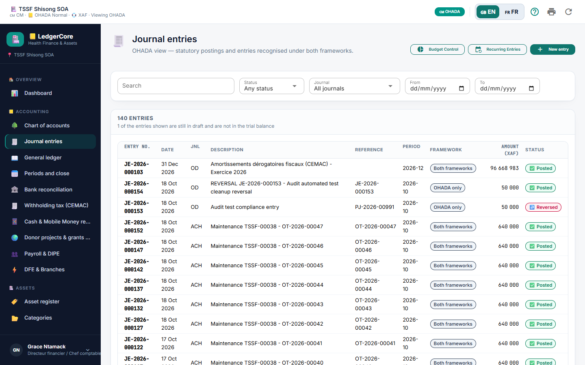
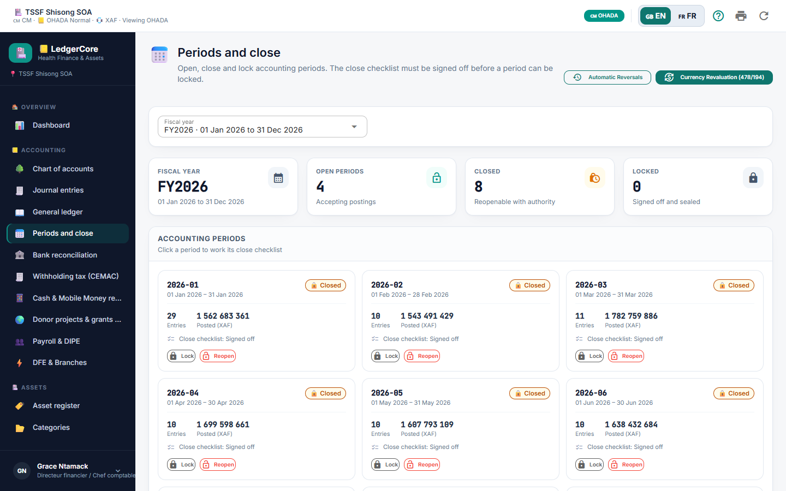
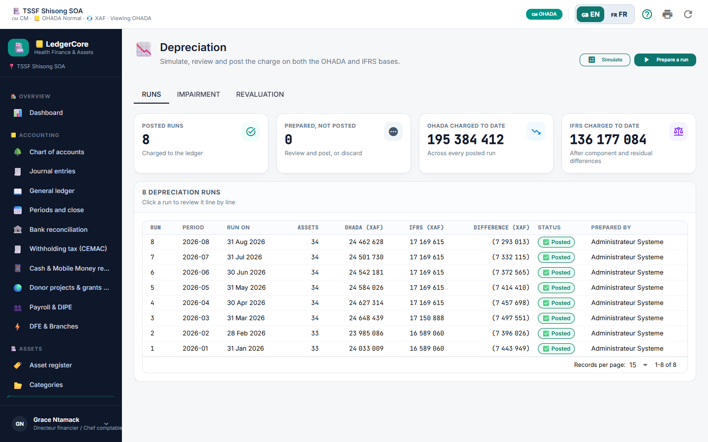

1. Role Scope & Primary Responsibilities
As the Chief Financial Officer (CFO) or Chief Accountant, you hold overall authority over the hospital's financial spine: - ✍️ Reviewing and posting journal entries prepared by accounting clerks. - 📉 Executing monthly and annual asset depreciation runs. - 🏦 Monitoring real-time treasury positions across commercial banks and Mobile Money accounts. - 🔒 Overseeing the structured 12-step month-end closing procedure. - 📊 Reviewing and signing off on statutory financial statements (Balance Sheet, Income Statement, Statement of Cash Flows) and international IFRS presentations. - 📄 Generating the dematerialized electronic tax audit file (FEC - Accounting Entries Audit File).
2. Daily Workflow: Reviewing & Posting Journal Vouchers


Step-by-Step Procedure:
- 🔑 Sign In: Use your CFO credentials (Demo:
grace.ntamack@hgy.cm/Ledger@2026). - 📊 Review Executive Dashboard:
- Check the Year-to-Date Net Surplus (Surplus/Deficit).
- In the Ledger Activity card, observe the Still in draft counter. Click directly on it to view uncommitted vouchers.
- 🔎 Inspect Draft Vouchers:
- Go to Accounting -> Journal Entries (
/journal). - Set the filter
Status: Draft. - Click on a draft voucher to open its detail view.
- Go to Accounting -> Journal Entries (
- ⚖️ Audit Statutory Compliance:
- AUDCIF Art. 17 Check: Ensure the Reference * field contains an authentic supporting document identifier (e.g.,
FAC-2026-9901). - Equilibrium Check: Confirm Total Debits equal Total Credits.
- Posting Level Check: Confirm that no lines are posted to 2-digit or 3-digit heading accounts.
- Cost Centre & Partner Check: Verify that expense lines carry an analytical cost centre and collective accounts (
401,411) have an assigned third-party partner.
- AUDCIF Art. 17 Check: Ensure the Reference * field contains an authentic supporting document identifier (e.g.,
- 🚀 Post to Ledger:
- Click Post to ledger (
task_alticon). - The entry status transitions from
drafttoposted, a sequential entry number is permanently sealed, and the General Ledger running balance updates immediately.
- Click Post to ledger (
3. Month-End Financial Close Procedure
Follow this strict chronological sequence to ensure full compliance with AUDCIF Articles 13 & 20:

Detailed Step-by-Step Instructions:
Step 3.1: Execute Monthly Asset Depreciation Run
- 📉 Navigate to Assets -> Depreciation (
/depreciation). - ⚙️ Click Run Depreciation. Choose the fiscal period (e.g.,
September 2026). - 🔍 Click Simulate. Review the calculated lines:
- Verify straight-line and degressive depreciation charges.
- Confirm investment subsidy write-backs (Account
14$\to$799).
- 🚀 Click Post Run. The system commits the balanced entry to Journal
AMO.

Step 3.2: Verify Bank & Mobile Money Reconciliations
- 🏦 Navigate to Accounting -> Bank reconciliation (
/bank-reconciliation). - 💳 For each bank account and Mobile Money desk:
- Confirm that the electronic statement closing balance matches the cash book closing balance.
- Ensure the Unreconciled Variance displays
0.00 XAF. - Click Sign Off Reconciliation.
Step 3.3: Complete the 12-Step Period Close Checklist
- 📅 Navigate to Accounting -> Periods and close (
/periods). - 🔎 Click on the active period (e.g.,
2026-09). - ✅ Work through and check off each completed item:
- [x] Step 1: All draft entries verified and posted or deleted.
- [x] Step 2: Bank and Mobile Money reconciliations completed with zero variance.
- [x] Step 3: Cash desk registers audited and vault transfers verified.
- [x] Step 4: Monthly asset depreciation run posted to Journal
AMO. - [x] Step 5: Monthly payroll wage entry posted and reconciled against social declarations (DIPE).
- [x] Step 6: Withholding taxes (WHT/TSR) reconciled and certificates generated.
- [x] Step 7: Patient billing reconciled against pharmacy/ward consumption.
- [x] Step 8: Foreign currency accounts revalued at month-end closing exchange rates.
- [x] Step 9: Inter-branch reciprocal accounts (
181/185) reconciled. - [x] Step 10: Physical inventory adjustments booked.
- [x] Step 11: Departmental cost allocations reviewed.
- [x] Step 12: Trial balance equilibrium confirmed.
- 🔒 Click Close Period. General journal capture is now locked for all standard clerks.
- 🔐 For year-end finalization, click Lock Period (Final Seal) to generate the permanent SHA-256 cryptographic seal.
4. Closed Period Overrides & Governance
If an extraordinary post-closing adjustment is legally required by external auditors:
1. 🛡️ Ensure your account holds the journal.post_closed permission.
2. 📝 When capturing or posting the entry into a closed period, a mandatory Override Reason Dialog will prompt you.
3. ✍️ Enter an audit justification of at least 10 characters (e.g., Statutory Auditor Audit Adjustment - Litigation Provision).
4. 🔒 LedgerCore records the entry with closed_period_override = 1, logs your user ID as override_by, and generates an indelible entry in the forensic audit trail.
5. Handling Error Corrections & Reversals (Contra-Entry)
In strict compliance with AUDCIF Article 20, deleting or altering a posted journal entry is illegal.
Reversal Procedure:
- 🔍 Open the posted journal voucher in Journal Entries (
/journal). - ↩️ Click Reverse Entry in the entry modal footer.
- 📅 Confirm the accounting reversal date (defaults to current date).
- 📝 Provide an audit explanation (minimum 5 characters, e.g.,
Correction of analytical account allocation error). - 🚀 Click Reverse entry. The system commits the inverted double-entry and links both records in the audit trail.